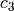
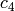
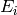
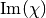

| Larch: X-ray Data Analysis |
XAFS: Fourier Transforms for XAFS
XAFS: Fitting XAFS to Feff Paths
For modeling EXAFS data, Larch relies heavily on calculations of theoretical XAFS spectra using FEFF. Being able to run FEFF and use its results is of fundamental importance for using Larch for fitting EXAFS spectra. While a complete description of FEFF is beyond the scope of this documentation, here we describe how to read the results from FEFF into Larch. The main interface for this is the feffpath() function that reads FEFF feffNNNN.dat file and creates a FeffPath Group.
The outputs from Feff for each path are complicated enough to need a structured organization of data. This is accomplished by providing a special kind of a Larch Group – a FeffPath Group which holds all the information about a Feff Path, including the photo-electron scattering amplitudes and phase-shifts needed to describe and calculate the EXAFS for that Path. A FeffPath Group is created with the feffpath() group. For many uses a Feff Path can be treated as a “black box”, and simply setting the adjustable Path Parameters and passing around these Groups is sufficient for simulating and fitting EXAFS spectra.
At times it can be helpful to inspect and study the detailed components of
the Feff Path. Since a FeffPath Group is a regular Larch Group, all the
data can be read and viewed. A FeffPath Group has the components listed in
the Table of Feff Path Parameters. This
includes the Adjustable Numerical Path Parameters – the values of which
can be changed to affect the calculated EXAFS for the Path – as well as
the arrays for  and
and  and several other attributes.
Since this Group is used to calculate
and several other attributes.
Since this Group is used to calculate  for the path, many of
the components need to be in place and holding the expected values so that
the calculation can be done correctly, Due to Larch’s flexibility, it is
possible to delete, overwrite, or put inappropriate values into the
components of a FeffPath Group, and care must be taken to avoid this.
for the path, many of
the components need to be in place and holding the expected values so that
the calculation can be done correctly, Due to Larch’s flexibility, it is
possible to delete, overwrite, or put inappropriate values into the
components of a FeffPath Group, and care must be taken to avoid this.
Table of FeffPath attributes, including the Path Parameters used in the EXAFS equation. The attributes here are arranged by category. The Info attributes are informational only. The two Numerical attributes reff and nleg are used in the EXAFS equation but are meant to be constants and their values should not be changed. The Adjustable attributes are the standard Adjustable, Numerical Path Parameters that can be changed to affect the resulting EXAFS
attribute name category description filename Info name of feffNNNN.dat file label Info path description geom Info path geometry: list of (symbol, ipot, x, y, z) reff Numerical , nominal path length
nleg Numerical number of path legs (1+number of scatterers) degen Adjustable , path degeneracy
s02 Adjustable , amplitude reduction factor
e0 Adjustable , energy origin
deltar Adjustable , shift in path length
sigma2 Adjustable , mean-square displacement
third Adjustable , third cumulant fourth Adjustable , the fourth cumulant ei Adjustable , imaginary energy shift. k Output array chi Output array chi_imag Output array , imaginary EXAFS p Output array , complex photo-electron wavenumber
_feffdat Group a Group containing raw data from feffNNNN.dat
create a FeffPath Group from a feffNNNN.dat file.
| Parameters: |
|
|---|---|
| Returns: | a FeffPath Group. |
For all the options described above with value or parameter either a numerical value or a Parameter (as created by _math.param()) can be given.
for a FeffPath¶calculate for a single Feff Path.
| Parameters: |
|
|---|---|
| Returns: | None |
If k is specified, that will be used as the set of values at which
to calculate . If not given, the values of kstep and kmax
will be used to construct a uniformly-spaced array of values starting
at 0 and extending to (and including) kmax.
The calculated array is placed in the Feff Path Group path as
path.chi. In addition calculated arrays for , , and
are placed in the variables path.k, path.p, and
path.chi_imag, respectively. See The EXAFS Equation using Feff and FeffPath Groups for the
detailed definitions of the quantities.
If specified, paramgroup is used as the Parameter Group – the group used for evaluating parameter expressions (ie, constraints using named variables). This is similar to the use in REFERENCE HERE.
sum the for a list of FeffPath Groups.
| Parameters: |
|
|---|---|
| Returns: | None |
This essentially calls path2chi() for each of the paths in the
pathlist and writes the resulting arrays for and the
sum of for all the paths) to group.k and group.chi.
Each FeffPath Group will have a _feffdat sub-group which contains the results of the Feff
calculation. Many of these (including the arrays of data) are used for the calculations of
for that Path, while others (such as geom and nleg) are copied into the
FeffPath Group, and others still (such as exch and rnorman) are left only in the
_feffdat Group, though they may be used for further study.
As with the FeffPath Group, this Group has an expected set of components that should be treated as read-only.
attribute description amp array: total amplitude degen path degeneracy (coordination number) edge energy threshold relative to atomic valu (a poor estimate) exch string describing electronic exchange model filename File name gam_ch core level energy width geom path geometry: list of (Symbol, Z, ipot, x, y, z) k array: k values kf k value at Fermi level lam array: mean-free path mag_feff array: magnitude of Feff mu Fermi level, eV pha array: total phase shift pha_feff array: scattring phase shift potentials path potentials: list of (ipot, z, r_MuffinTin, r_Norman) real_phc array: central atom phase shift red_fact array: amplitude reduction factor rep array: real part of p rnorman Norman radius rs_int interstitial radius title user title version Feff version vint interstitial potential
Now we are ready to write down the full EXAFS equation used for a Feff Path.
Here we simply read a feffNNNN.dat file and manipulate its contents.
Now, we add some FEFF files together, applying path parameters.x